|
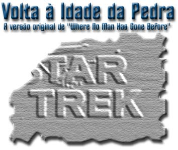
por
Salvador Nogueira
Se em 8 de setembro de
2001 Jornada nas Estrelas completou 35 anos de histria,
prepare-se agora para mergulhar na Pr-Histria do franchise.
Estamos de volta a 1965, ano em que foi produzido o piloto que
convenceria a rede NBC a bancar e exibir em sua programao a
nova srie de Gene Roddenberry.
Todo mundo conhece a velha histria da gnese de Jornada:
Gene bateu de porta em porta, vendendo seu conceito de
"Caravana" para as estrelas, um equivalente futurista da
conquista do Oeste americano. A Desilu, na esperana de recuperar
seu prestgio, decidiu apostar na idia, e, junto a Roddenberry,
saiu atrs de uma rede que quisesse exibir o programa. A NBC
acabou aceitando, e encomendou um piloto para a srie.
Este, hoje conhecido como "The Cage", foi concludo
em 1964. Ao assistirem, os executivos da NBC acharam maravilhoso,
mas no era isso que Gene havia prometido quando explicou seu
conceito. Em vez de aventura e muita ao, temos muito dilogo
e filosofia. Mesmo assim, os engravatados estavam impressionados.
Por isso, decidiram inovar e encomendar Desilu no a srie,
mas um segundo piloto, que os ajudasse a decidir se valeria a pena
ir adianta com aquela "jornada".
O segundo piloto, j com boa parte do elenco que acabaria se
fixando durante a srie (dos sete regulares, DeForrest Kelley,
Walter Koenig e Nichelle Nichols estavam de fora), ganhou o nome
de "Where No Man Has Gone Before". Depois de
James Kirk dar belos socos e pontaps em Gary Mitchell, a NBC
ficou satisfeita com o grau de adrenalina, e encomendou mais episdios.
"The Cage" no pde ser reaproveitado como um
episdio regular da srie, pois muitos elementos (a comear
pelo capito) eram diferentes do que viria quando o programa
entrasse em produo semanal. J "Where No Man Has Gone
Before" estava muito mais prximo do resto da srie, de
modo que acabou vendido como mais um dos episdios disponveis
da primeira temporada.
Obviamente, ao incluir o piloto aos outros episdios, algum
trabalho de edio precisou ser realizado para adequ-lo ao
resto da srie, incluindo a insero da abertura criada
posteriormente para a srie, dos letreiros de crditos e a reedio
do episdio para que ele ficasse no tamanho exato do tempo de
exibio disponibilizado pela NBC.
Todos conhecemos o resultado dessa edio, mas o que teria sido
feito da edio original, aquela que convenceu os executivos da
NBC que Jornada poderia ser um sucesso? Apesar de rarssimo,
esse documento to importante da histria do franchise acabou
indo parar nas mos dos fs, provavelmente depois que um deles
conseguiu fazer uma transferncia para vdeo a partir do rolo de
filme 16 mm original.
Como o leitor pode imaginar, cpias de cpias foram feitas ao
longo dos anos, de modo que alguns poucos felizardos ao redor do
mundo possuem essa verso. Agora, graas ao incansvel
pesquisador de Jornada e colaborador do Trek Brasilis
Gustavo Leo, uma cpia veio parar em nossas mos, e a primeira
coisa que fizemos foi compilar tudo que no aparecia na edio
exibida pela televiso e tratar de digitalizar o material,
disponibilizando-o para download.
Na maior parte do episdio, a edio praticamente igual nas
duas verses. As grandes mudanas esto mesmo no incio e nos
crditos finais.
Jogo dos sete erros
O incio deste episdio, assim como os letreiros usados, no
tem nada em comum com o padro a que nos acostumaramos durante
a srie. A fonte de letras usada para grafar as palavras
"Star Trek" e os crditos a mesma que pode ser vista
nas diversas verses de "The Cage".
A verso original de "Where No Man Has Gone Before"
comea de forma bastante potica, com uma viso do que
supostamente seria a Via Lctea, e Kirk fazendo uma entrada em
seu dirio. A funo da narrao introduzir o conceito da
srie ao telespectador, de forma muito similar ao que a abertura
faria nos episdios regulares.
V-se aqui o que claramente a gnese do tom usado no incio
de cada episdio regular, com algo prximo do estilo "audaciosamente
indo onde nenhum homem jamais esteve". Na verso original,
Kirk narra o seguinte:
|
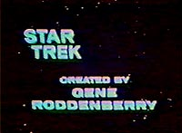
Download
Formato:
AVI (Divx)
Tamanho: 3,7Mb
Durao: 1 min 39 s
Resoluo: 304x224
|
Dirio da
Enterprise, capito James Kirk comandando.
Estamos deixando a vasta nuvem de estrelas e planetas que chamamos
de nossa galxia. Atrs de ns, Terra, Marte, Vnus --at
nosso Sol-- so traos de poeira.
A questo: o que h l fora nesse vazio negro adiante?
At agora, nossa misso foi a de regulao de lei espacial,
contato com colnias terrestres e investigao de vida aliengena.
Mas agora, uma nova tarefa: uma sondagem l fora onde nenhum
homem jamais esteve.
Aps a entrada, surge o letreiro "Star Trek", seguido
por "Created by Gene Roddenberry" e concluindo com
"Starring William Shatner". Os crditos para todos os
outros atores surgem j durante a execuo do episdio.
A verso original divide a srie em atos, claramente demarcados
por letreiros na tela. Especula-se que o uso desse recurso tenha
sido muito mais para convencer os executivos de que aquele era um
drama srio, e no um show para crianas, do que para qualquer
propsito de edio final ou estilizao da srie.
|
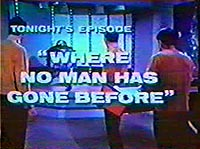
Download
Formato:
AVI (Divx)
Tamanho: 2,6Mb
Durao: 1 min 9 s
Resoluo: 304x224
|
O incio do primeiro
ato o que todos conhecemos: Kirk e Spock jogando xadrez quando
Kelso informa, por uma tela, que a Enterprise encontrou uma sonda
da nave terrestre Valiant perdida no espao. A dupla vai at a
sala de transporte, onde surge o letreiro indicando o nome do episdio,
com direito a uma bvia chamada "Tonight's episode: Where No
Man Has Gone Before".
Assim que Kirk e Spock saem da ponte, aps pr a nave em alerta,
surge a maior mudana em termos de edio deste episdio com
relao verso exibida na TV. As cenas em que os tripulantes
andam pelos corredores muito mais longa, e j nos permite um
belo insight sobre os personagens a que seramos expostos em
breve.
Vemos Gary Mitchell paquerando duas mulheres em seu caminho pelo
turboelevador, e j demonstrando uma certa atitude que parece
dizer sutilmente "Ah, se eu pudesse..." --um sinal
bastante claro do que aconteceria ao pobre Mitch durante o episdio.
Uma das "vtimas" a ordenana Smith, cujo papel se
resumia a uma nica fala durante todo o episdio.
(Abrindo um parntese, a fala solitria da ordenana Smith
uma das mais bem sacadas e obscuras piadas internas da srie.
Normalmente, entre os roteiristas de televiso existe o costume
de nomear personagens que aparecem em um roteiro para fazer apenas
uma ou duas intervenes de "Jones" ou
"Smith", para evitar o trabalho de pensar em um nome que
provavelmente nem ser dito. Em "Where No Man Has Gone
Before", Kirk topa com a ordenana na ponte e diz,
"Ordenana... Jones?", ao que a pobre oficial responde,
com o orgulho ferido, "O nome Smith, capito".)
No corredor, tambm temos a chance de ver o doutor Piper e o ento
fsico de bordo Sulu se dirigindo ponte. Aps outras cenas
cheias de figurantes nos corredores, logo voltamos ao curso normal
do episdio, com Gary quase perdendo o turboelevador que levaria
Spock e Kirk ponte.
|
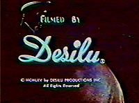
Download
Formato:
AVI (Divx)
Tamanho: 2,4Mb
Durao: 1 min 3 s
Resoluo: 304x224
|
Da em diante o episdio
exatamente o mesmo que o exibido na TV, e a nica outra mudana
vem nos crditos finais, em que novamente a fonte dos letreiros
a vista em "The Cage", e a sequncia muito
mais rpida do que a dos episdios regulares, listando apenas os
atores convidados e o estdio Desilu. No total, o episdio
apenas ligeiramente mais longo que a verso exibida nas televises
do mundo todo, mas so segundos a mais que tornam-se mais
preciosos a cada ano que passa, restaurando a histria desta
imortal srie de televiso.
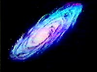
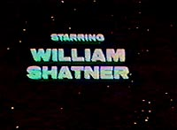
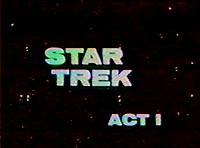
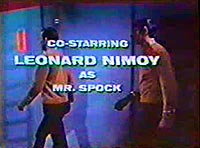
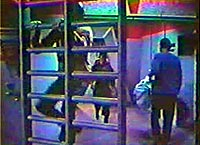
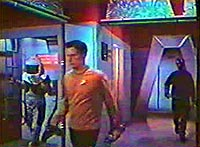
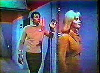
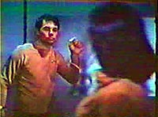
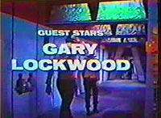
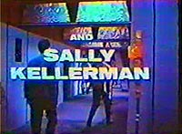
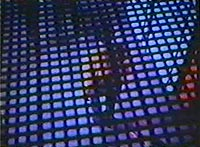
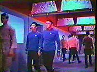
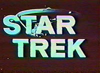
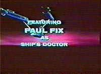
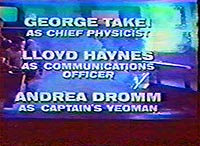
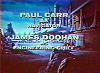
|